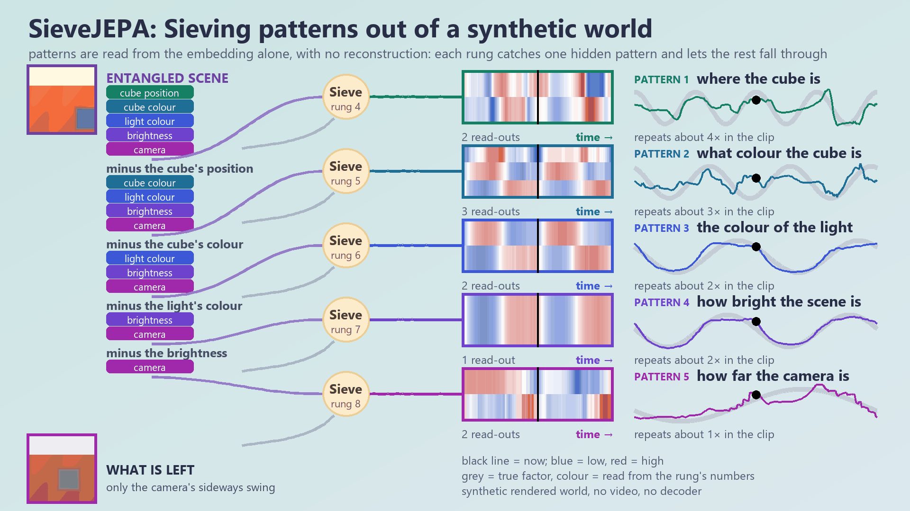

The two experiments
| Synthetic world | PickCube autoencoder | |
|---|---|---|
| Factors | 17 blocks × 4 dimensions (68-D), independent Gaussian; 16 are scored, the 17th is the residual | 9 factors on a full factorial grid of discrete levels (gripper, arm pose, cube yaw, cube position, cube colour, light tint, brightness, two camera factors), 34,992 rendered images |
| Observation | 4 tanh coupling layers (strength 0.5) applied to the latents | 96×96 ManiSkill PickCube-v1 renders |
| Encoder | LeJEPA encoder trained to invert the observation map, 5 seeds | High-capacity convolutional autoencoder, 2,048-D embedding, one trained model |
| Pairs | 30,000 nested pairs per rung | 120,000 nested pairs per rung (the figure uses this run) |
| Block rank | fixed at the true size, 4 | searched over 1–16; the best rank that keeps leakage ≤ 0.25 is reported |
| Variants | No whitening (mean-centred only) and supplied ZCA whitening, on the same frozen embedding and the same pairs | |
How the score is computed
Every R² here is a held-out ridge regression, compared with a predictor that always guesses the test mean (R² = 1 − squared error ÷ squared error of that mean). Own-factor R² regresses the true factor values on the block's projection of the embedding. The ceiling is the same regression on the whole embedding, so it measures how much of the factor the embedding encodes at all. The ratio own ÷ ceiling is what the figure colours. Leakage is the largest R² of the block on any other factor. Where a ceiling is near zero the ratio is undefined and is not shown.
Recovery by rung
Figure 1. Own-factor R² as a fraction of the ceiling, rung by rung
A. Synthetic Gaussian world, LeJEPA encoder. Mean of 5 seeds. Every rung sits at about 1.00 in both variants.
B. PickCube, convolutional autoencoder. Best rank in 1–16 with leakage ≤ 0.25. Whitened values are capped by the rank limit of 16 and are still rising for several factors.
Synthetic world
All 16 rungs are recovered at the true block size. Mean own ÷ ceiling is 0.999 without whitening and 0.997 with it (worst rung-seed 0.997 and 0.995). Maximum leakage is 0.0004 and 0.0006; the mean principal angle to the oracle subspace is 1.6° in both. Whitening neither helps nor hurts here, and no extra rank is needed.
PickCube autoencoder
Table 1. Recovery per factor
| Factor | Ceiling (full embedding) | No whitening: best block | Whitened: best block (≤ rank 16) | Rank for 75% (none / whitened) | Directions occupied (none / whitened) | Nuisance ÷ signal |
|---|---|---|---|---|---|---|
| gripper | 0.79 | 0.13 little rank 1, own R² 0.10, leak 0.18 | 0.47 partial rank 16, own R² 0.38, leak -0.00 | not by 16 / not by 16 | 5 / 868 | 1.88 |
| arm pose | 1.00 | 0.81 strong rank 3, own R² 0.81, leak 0.14 | 0.07 little rank 16, own R² 0.07, leak 0.00 | 2 / not by 16 | 6 / 1417 | 0.26 |
| cube yaw | 0.71 | every rank leaks > 0.25 | 0.09 little rank 16, own R² 0.06, leak 0.00 | not by 16 / not by 16 | 9 / 1194 | 5.06 |
| cube position | 1.00 | 0.79 strong rank 4, own R² 0.79, leak 0.03 | 0.11 little rank 16, own R² 0.11, leak 0.00 | 2 / not by 16 | 5 / 679 | 0.22 |
| cube colour | 0.96 | 0.43 partial rank 1, own R² 0.42, leak 0.02 | 0.85 strong rank 16, own R² 0.83, leak -0.00 | not by 16 / 14 | 4 / 162 | 3.93 |
| light tint | 1.00 | 0.65 substantial rank 2, own R² 0.65, leak 0.03 | 0.33 partial rank 16, own R² 0.33, leak -0.00 | not by 16 / not by 16 | 11 / 54 | 1.18 |
| brightness | 1.00 | 0.77 strong rank 3, own R² 0.77, leak 0.12 | 0.93 strong rank 16, own R² 0.93, leak -0.00 | 2 / 12 | 8 / 18 | 0.93 |
| camera dist/elev | 1.00 | 0.94 strong rank 5, own R² 0.94, leak 0.21 | 0.99 strong rank 16, own R² 0.99, leak 0.01 | 1 / 6 | 6 / 6 | 0.11 |
| camera azimuth | 1.00 | 0.92 strong rank 2, own R² 0.92, leak 0.11 | 0.99 strong rank 16, own R² 0.99, leak 0.01 | 1 / 2 | 2 / 2 | 0.09 |
Ratio = own R² ÷ ceiling. “Directions occupied” counts the embedding-covariance directions carrying the factor's moment-difference energy above 1% of the top one. Nuisance ÷ signal is from the fixed-factor test (no whitening, provisional ranks): the block's energy on pairs that hold its own factor fixed divided by its energy on pairs that vary it.
Figure 2. How many embedding directions each factor occupies
No whitening Supplied whitening. Log scale.
- Recovery follows the ceiling. Gripper and cube yaw are the two factors the embedding encodes least (ceilings 0.79 and 0.71); they are also the two weakest or leaking blocks without whitening. The camera, arm pose, cube position, tint and brightness have ceilings near 1.00 and are recovered strongly or substantially without whitening.
- Whitening spreads each factor. With whitening a factor occupies up to 1,417 directions (arm pose); without it, 2–11. A rank-1 to rank-3 block therefore captures almost nothing in the whitened space, and the rank must grow to 12–16 or beyond. The original run's rank sweep reached 0.75–0.83 for arm pose, cube position and gripper only at rank 128.
- Some blocks are entangled. For gripper, cube yaw, cube colour and light tint, the nuisance ÷ signal ratio is above 1: the block responds more to pairs that hold its own factor fixed than to pairs that vary it. Their leakage onto other factors without whitening reaches 0.18, 0.37, 0.36 and 0.69.
When a factor never reaches the embedding
Figure 3. A rendered synthetic world where rungs 1–3 carry no information

Synthetic rendered world, no video, no decoder. Rungs 4–8 each recover one pattern. Rungs 1–3 are not rendered in this world, so there is nothing for the sieve to find there. Read-outs come from a real SIEVE run without whitening; recovery is partial for the cube factors (about 0.5 and 0.3 of the ceiling) and stronger for the others (about 0.55 to 0.77).
This is the same pattern as the PickCube ResNet LeJEPA run, where gripper, cube yaw, cube position and cube colour have a full-embedding R² of about zero (−0.008 to −0.006), and the blocks for those rungs recover nothing because the embedding does not hold them. One difference matters for the wording: in Figure 3 the first three factors are missing from the images themselves, so the loss happens before any encoder; in the ResNet run the factors are in the images and are lost at the encoder. In both cases a factor with no information in the embedding has no recoverable block, whatever the method.
Attribution
Interpretation
The data point at the embedding, not the method: the same extraction code recovers the synthetic blocks to 0.997–0.999 of the ceiling, while on the autoencoder the ceiling itself is below 0.80 for two factors, factors spread over hundreds of whitened directions, and some blocks respond to the wrong pairs. The autoencoder differs from the synthetic setup in several ways at once: it is non-linear and convolutional, and its factors are discrete levels rather than Gaussian.
Not yet isolated Which of those differences causes the spreading is a hypothesis. Two experiments would separate them: an MLP encoder on the synthetic world (set A3, in progress; it collapsed under the original SIGReg weight and is being rerun with weight 0.05 as a labelled variant) and PickCube re-rendered with continuous Gaussian-sampled factors.
Limits
- PickCube: one trained autoencoder and one pair draw per setting, no confidence intervals; the best rank is chosen among 16 with leakage ≤ 0.25 on validation rows, so values are best-case readings.
- Whitened PickCube values are lower bounds: the rank search stops at 16 and several curves are still rising.
- Nuisance ÷ signal uses the provisional ranks (1, 3, 1, 2, 3, 3, 1, 2, 1) and no whitening, not the best ranks of Table 1.
- The synthetic figure is for the unscaled embedding only. Other synthetic conditions are in the technical write-up.
Sources
Synthetic: sieve_nowhiten_synth_rungs16_rescale/seed*_results.json. PickCube: pickcube_lejepa_sieve_high_capacity_ae_verified/pod_results/minimal_rank.json, diag_whitening.json, and pickcube_deep_rungs_whitening/fixed_factor_energy.json. Every number on this page is computed from those files by make_report.py.